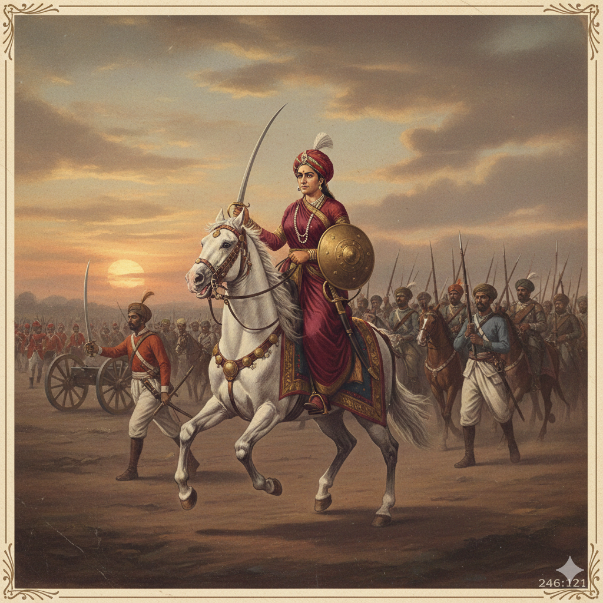
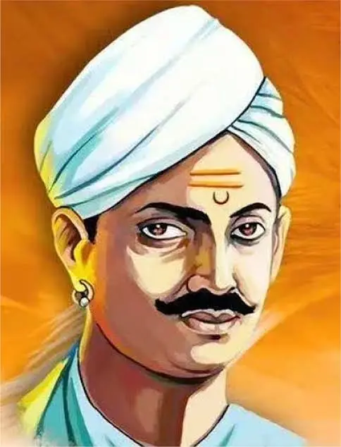
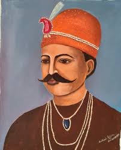
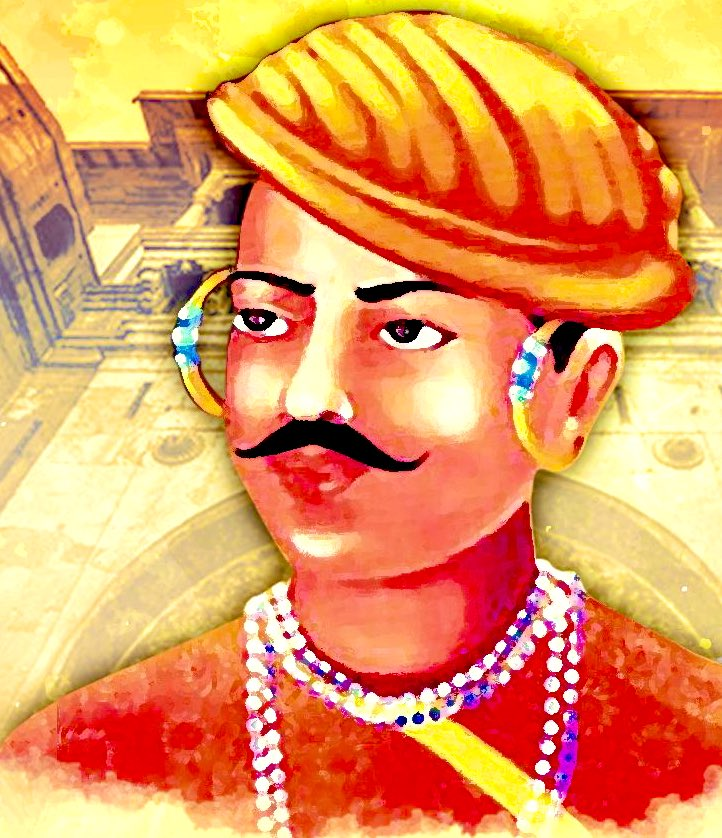
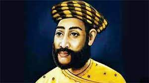
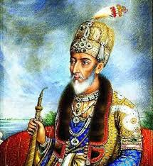

Introduction To
The Great War Of Independence
Arrival Of Dalhousie
The arrival of Lord Dalhousie as Governor-General marked a turning point in Indian history. His Doctrine of Lapse led to the annexation of princely states, offending traditional rulers and weakening Swarajya. At the same time, Indian sepoys faced growing discrimination and disrespect. These combined grievances sparked widespread anger, leading to the Revolt of 1857—a massive uprising that shook British rule in India.
Freedom Fighters

Rani Laxmi Bai
Mangal Pandey
Tantia Tope
Nana Saheb
Kunwar Singh
Bahadur Shah Zafar